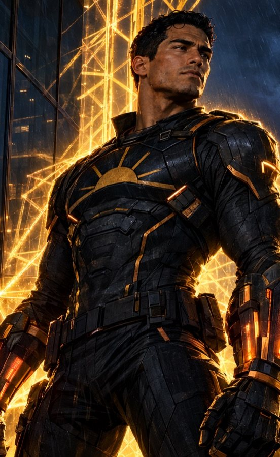
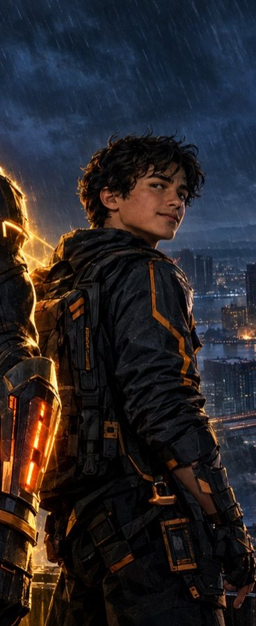
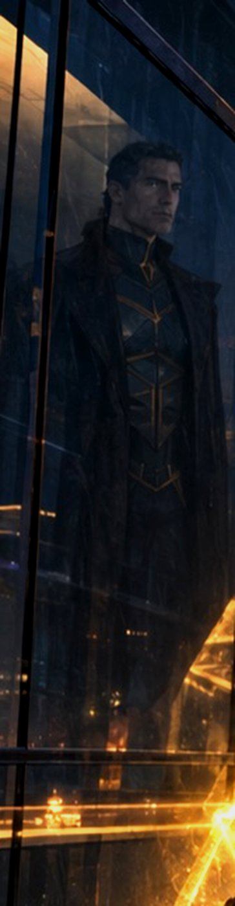
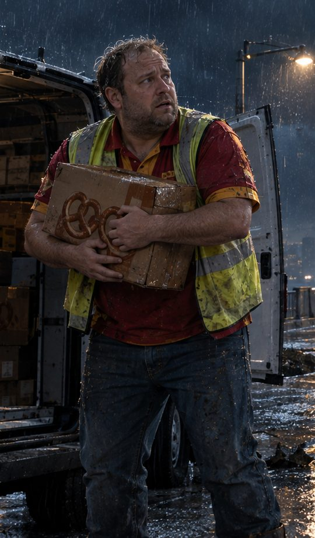
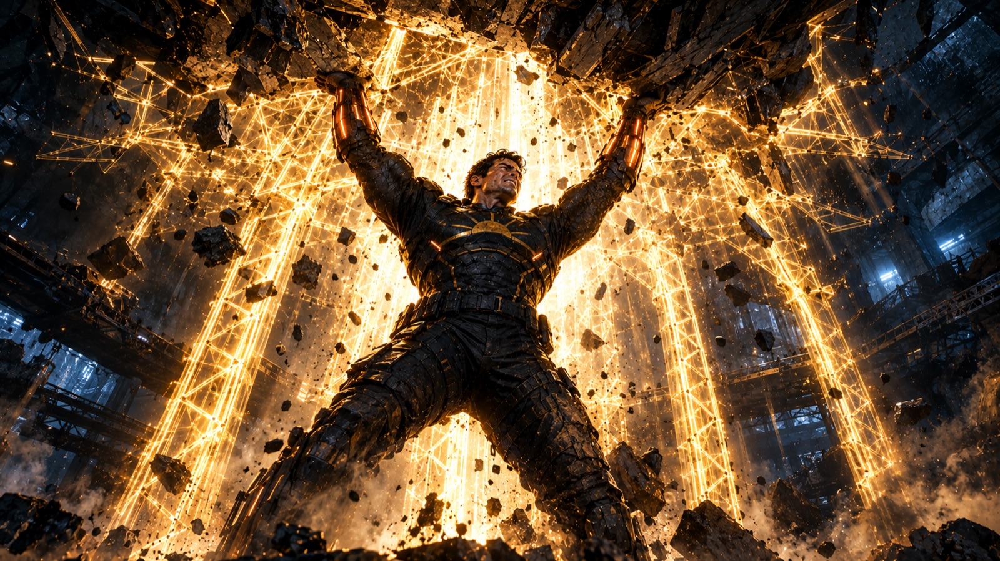

What it isA choose-your-own-adventure comic
HIGHRISE is a branching superhero story you read like a graphic novel. You pick one of four characters, make three big decisions, and land on one of eight endings for that character. Every choice changes where you go, who you meet, and what you can still save. Each decision runs on a countdown clock, so hesitating is a choice too.
The storyThe night the city starts falling
At 11:42 one night a warehouse roof in the Foundry District comes down, and Mateo Reyes holds it up. He is Highrise: he can turn his own strength into glowing golden steel, beams and braces and walls that hold a collapsing building together. Then Crown Bridge starts to move, and it becomes clear the city is not failing by accident.
The man behind it is Adrian Voss, the Architect, the engineer who built half of Meridian City and knows exactly where every structure is weakest. He has planted four hundred hidden release drones across forty-one sites. Tonight he means to prove that a city built on shortcuts deserves to come down.
Who you playFour sides of the same night




InspirationWhere the idea came from
HIGHRISE came from gritty, cinematic superhero graphic novels, and from wanting a hero whose power is holding things together instead of smashing them. If the hero builds, the danger has to be the city itself breaking, so the villain became an engineer who uses his knowledge of how buildings fail as a weapon.
I wanted the choices to really matter, so every branch goes to a different place with different people, and no two endings happen in the same room. The video game was inspired by Teenage Mutant Ninja Turtles Arcade: Wrath of the Mutants, which is where the side-scrolling brawler started, and by Call of Duty for the first-person mode.
The gameHIGHRISE: Night Shift
The game tells the hero's side of the same night. You play it in first person, or in the original 2D side-scroller it started as. It runs in one HTML file in the browser.
- 18 stages across four chapters, and you fight the Architect three times, each fight harder than the last.
- Game modes: Story, Survival, Time Trial, Hardcore, Practice Range, Boss Rush, One Shot, Arms Race and a Daily Challenge.
- Co-op: add a friend by code and play together.
- A shop, locker, quests and a hero pass, with voiced comms from Kai, Priya and the Architect.

How it was madeBuilt with AI tools
I designed the story, the characters and how everything should play, then directed AI tools to build it. Every prompt is in the prompt log.
- Claude Code
Built the story website and the game from my prompts, and tested them.
- ChatGPT
Painted the artwork: every story illustration, character, robot and boss, the title screen and the shop skins.
- Kokoro + Chatterbox
Open-source voice models, run on my own computer, that recorded the characters' voices.